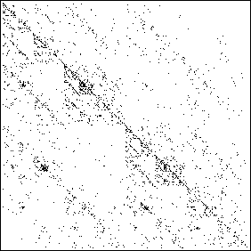
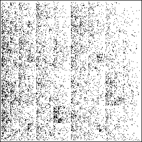

| Here is the IFS driven
by the text of Benoit Mandelbrot's essay "Mathematics and Society in the
Twentieth Century," read as a DNA string. How was this done? |
| * We took the text of
the essay, and removed all punctuation, spaces, paragraph indents, and
converted all letters to lower case,
obtaining a string of 12,325 characters. |
| * Then we read through the string
sequentially, applying T1 for each occurrence of c,
T2 for each occurrence of a,
T3 for each occurrence of t, and
T4 for each occurrence of g. |
| The resulting driven IFS is shown on the left. We certainly
see a clustering of points along the diagonal, but
does that reflect any more than the greater abundance of a and t?
(There are 461 c, 1080 a, 1226 t, and only 192 g.) |
|  |
|
 |
| CATG picture |
|
Whole text (WT) picture |
|
| Another approach is to divide the letters of the alphabet into
four bins. On the right above is the driven IFS from the same text, plotted this way: |
| apply T1 for every a, b, c, d, e, f, g, | (4119 occurrences) |
| apply T2 for every h, i, j, k, l, m, | (2505 occurrences) |
| apply T3 for every n, o, p, q, r, s, | (3526 occurrences) |
| apply T4 for every t, u, v, w, x, y, z | (2175 occurrences) |
|
| Of course, there is a natural
sequential ordering of the real numbers, whereas the ordering of the
alphabet is arbitrary. (Glance at your computer keyboard if you think the
ordering of the letters is anything other than arbitrary.) So we must
be careful with interpretations. |
| However, comparing these pictures can lead to the discovery of a
delicate
point about driven IFS. |